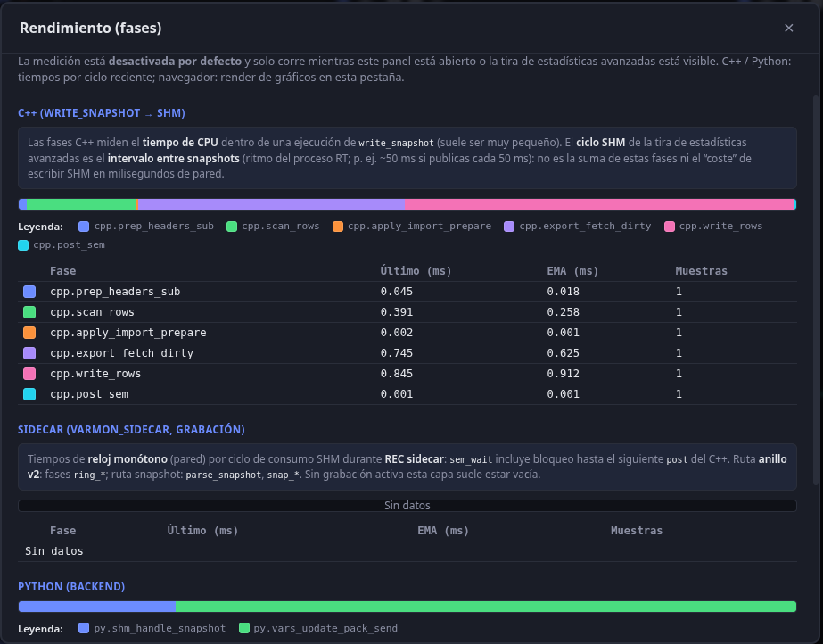

Performance
The stack targets maximum performance: low latency and low CPU/network use between the publishing C++ process and the browser.
Low-cost transport: SHM and UDS
- C++ ↔ Python: no TCP. Local communication via:
- Shared memory (SHM): C++ writes snapshots to
/dev/shm/and signals with a POSIX semaphore. Python maps the same segment and reads without extra copies or network serialization. - Unix domain sockets (UDS): commands (list variables, read/write, SHM subscription) go over a local socket. Lower overhead than TCP and no network stack.
This avoids network and CPU overhead on the live data path.
C++ publisher (libvarmonitor / shm_publisher)
Beyond SHM+UDS, the binary linking libvarmonitor applies several optimizations inside write_snapshot (once per publish cycle). Keys live in varmon.conf (C++ only; restart after changes).
Dirty mode (shm_publish_dirty_mode, default 1)
- Variables marked with
mark_dirty(name)(e.g. after UDSset_varor after applying a one-shot SHM import) go into an in-memory dirty set. - Between full refreshes, the publisher can build a mask and skip getters for rows that are neither dirty nor in the current export slice, which helps when most variables are unchanged.
shm_publish_full_refresh_cycles(default 1): how often a full refresh of all export rows is forced. With 1, every cycle is a full refresh: safe default compatible with apps that do not callmark_dirtywhen mutating data behind the API. If you raise this (e.g. 5–10) and your app marks dirty correctly, you reduce reads on intermediate cycles.
Skip unchanged (shm_publish_skip_unchanged, default 1)
- After the scalar value is obtained, if type and double value match the last publish for that row, the publisher skips writing the mmap row (less memory traffic and cache churn).
row_pub_seqmay stay at the previous value: Python can reuse the decoded row when comparing sequences (works with partial slicing).
Export slice (shm_publish_slice_count + UDS set_shm_publish_slice)
- Described in Protocols: in partial mode only a subset of subscription indices is updated per cycle; header (
seq,timestamp) always updates. The backend often aligns N with Rel act during passive monitoring.
Async SHM publish thread (shm_async_publish)
- With 1,
write_shm_snapshot()on the RT thread only sets a pending flag and notifies a dedicated thread that runswrite_snapshot. Goal: lower jitter on the loop that calls the monitor. - With 0, publishing is synchronous in the caller (classic behavior).
CPU affinity
- libvarmonitor does not set affinity for the user’s C++ process (use
taskset/OS policy). - The Python backend may set
sidecar_cpu_affinityforvarmon_sidecar(recording and alarms) viasched_setaffinityon Linux, pinning recorder work away from your RT cores. See Setup.
Other pieces
- Subscription cache in the publisher: snapshot of the name list only when the subscription generation changes, avoiding massive per-cycle
std::stringcopies. - Reused buffers in
write_snapshot: static vectors for masks, export indices, and scalar batch to cut allocations on the hot path.
Measures to limit load
Monitored variables only
- Only user-selected monitored variables are sent over WebSocket to the browser.
- C++ only writes to SHM for subscribed variables (
set_shm_subscription): if the subscription has names, only those are written (by name viaget_var); if empty, no variable entries are written (header only withcount = 0andsem_post), avoiding dumping every variable each cycle when nothing is monitored. Available variables are fetched via UDS (list_names/list_vars) on demand. - Non-monitored variables are not included in client updates.
- Maximum variables in the SHM segment is shm_max_vars (
varmon.conf; C++ and Python must match). If you monitor more than that, only the first get values; the rest show "--". See Troubleshooting (section on many variables showing "--").
See Protocols — Monitored variable update system.
Rel act (browser update period)
- The backend does not send
vars_updateon every SHM cycle. - A minimum interval between WebSocket sends (UI Rel act) limits message rate and browser redraw without losing usefulness.
Virtualized variable browser
- The add-variables panel can show hundreds or thousands of names.
- The list is virtualized: only visible rows (plus overscan) are rendered, keeping the DOM small.
Chart downsampling
- Time series do not draw every history point.
- Downsample (configurable max points per series) limits canvas work.
Adaptive load
- When the tab is hidden (
document.hidden), the frontend can skip or throttle chart/table updates.
Large files (offline analysis)
- Very large TSVs are not read entirely at once:
- Preview: reads an initial chunk to estimate size and row count.
- Risk estimation: decides whether safe mode is recommended.
- Safe mode: work in segments (byte ranges); only needed segments load into memory.
Visual buffer and history
- Frontend
historyCachefollows the same window as the header Visual buffer control (and the advanced default): time-based trimming, a sample budget scaled to those seconds, and live chart X range. The server can set an initial default viavisual_buffer_secinvarmon.conf(seedocs_en/setup.md) when the user has no saved preference.
Together, these allow many variables and high update rates without saturating the machine or network.
Perf panel and /api/perf

- UI: The header Perf button opens a panel that polls
GET /api/perfwhile visible. It shows three layers in tables and stacked bars: - Python (
perf_agg): backend phases (e.g. SHM snapshot handling,vars_updatepack/send). - C++ (
server_info.shm_perf_us): CPU time insidewrite_shm_snapshotwhen the publisher has measurement enabled. - Sidecar: phases from the
varmon_sidecarprocess duringsidecar_cpprecording, read from the JSON file written via--perf-file(e.g.*.part.sidecar_perf.json). - Lease: Opening the panel or the advanced stats strip with
?perf=1onGET /api/advanced_statsrenews a server lease; without it, C++ stops fillingshm_perf_usafter ~1 s so idle processes are not measured constantly. - JSON shape (summary):
ts,lease_active,layers.python|cpp|sidecar, each withphases: [{ id, last_us, ema_us, samples }, ...]. Sidecar and Python times are usually in microseconds; the UI displays milliseconds.
Native recording (varmon_sidecar): cost optimizations
With a large SHM table (shm_max_vars) and a small TSV column set, the dominant cost used to be scanning every row on each sem_post and building name-keyed maps. The sidecar applies several techniques:
- Layout cache (
RecordingLayoutCache): After validating the header (version,count,table_off,stride, mmap size) and cached row names, a single O(N) pass fillsname_to_row_offand per-column offsets from thenames-file. While the layout stays valid, snapshot recording reads are O(k) in the number of TSV columns (read_recording_snapshot_columns), not O(N). - v2 ring replay without a per-sample map: When all columns are ring mode and indices align, TSV lines are built directly from ring slots (
v2_ring_replay_extract_lines); a name→value map per row is built only if sidecar alarm rules are enabled. - Reusing the name→offset map: With a valid cache, ring column resolution avoids rescanning all N rows (perf phase
sidecar.ring_col_resolve_scanbecomes essentially O(k)). - TSV formatting: Scalar cells use
std::to_charswhere available; fewer temporary strings and noostringstreamon the hot path. - Sidecar perf file:
VARMON_SIDECAR_PERF_FLUSH_EVERY(1–512, default 4 internally) throttles how often the diagnostic JSON is rewritten when using--perf-file.
Phase ids (sidecar.*) are defined in varmon_sidecar (kSidecarPerfIds), e.g. sem_wait, parse body, ring_extract, ring_replay_build_rows, snap_format, cycle_wall_wake_to_fwrite_done. The JSON also carries aggregates such as sum_to_fwrite_us for cross-checking the recording cycle.
Python while sidecar_cpp recording is active
shm_parse_hz_sidecar_recording(default 30 Hz inapp.py): caps how often the reader thread mmap-parses SHM solatest_snapshotand on-screen C++ values keep updating; the TSV is still written by the sidecar on the dedicated semaphore (sem_sidecar_name).0: the reader only drains the main semaphore (sem_name) on a timer (shm_sidecar_sem_drain_interval_sec) without parsing: C++ variable values from SHM freeze in the UI (telemetry and recording progress still update).